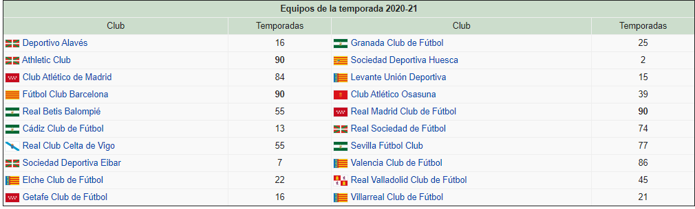

A lo largo de la historia de la competición han participado sesenta y dos equipos diferentes, siendo solamente tres los que han permanecido siempre en la primera categoría desde su edición inaugural. Se trata del Athletic Club, el F. C. Barcelona y el Real Madrid C. F.. Estos tres además, junto con el C. A. Osasuna, son los únicos que siguen siendo entidades deportivas propiedad de sus socios en lugar de sociedades anónimas deportivas propiedad de accionistas, privilegio concedido al haber obtenido en las auditorías realizadas por encargo de la L. F. P. desde la temporada 1985-86 un saldo patrimonial neto de carácter positivo y de manera excepcional hasta fecha de la instauración de la Ley 10/1990 del Deporte. En el momento en que alguna de estas entidades tuviera pérdidas estará obligada por ley a convertirse en S. A. D.. Además de los tres equipos antes mencionados que siempre han jugado en Primera División, solo hay otros seis equipos en España que nunca hayan participado en una categoría inferior a la Segunda, participando también por tanto siempre en el fútbol profesional: Valencia C. F., Club Atlético de Madrid, R. C. D. Espanyol, Sevilla F. C., Real Sporting de Gijón y Real Sociedad de Fútbol. El campo de juego más antiguo de España en la competición es el Estadio de Mestalla, con orígenes en el año 1923 y utilizado por el Valencia C. F., superando por apenas un mes al Estadio de El Madrigal del Villarreal Club de Fútbol. Por otro lado, el Wanda Metropolitano del Atlético de Madrid, y el Estadio de San Mamés del Athletic Club son los más novedosos recintos de la competición. Este último sustituyó al anterior estadio homónimo, que fuera el único que acogió todas las ediciones de la Primera División hasta su derribo en 2013, momento en el que el campo valencianista se convirtió en el que más ediciones de la competición ha acogido con 85. Aunque en los primeros años solo participaban diez equipos, más adelante se fue incrementando paulatinamente la cifra hasta los actuales veinte equipos. También se alcanzó la cifra de veintidós durante las temporadas 1995-96 y 1996-97.-El que tenga una mayor diferencia entre goles a favor y en contra según el resultado de los partidos jugados entre ellos.
-El que tenga la mayor diferencia de goles a favor teniendo en cuenta todos los obtenidos y recibidos en el transcurso de la competición. -El club que haya marcado más goles. -->-La mejor puntuación de la que a cada uno corresponda a tenor de los resultados de los partidos jugados entre sí por los clubes implicados.
-La mayor diferencia de goles a favor y en contra, considerando únicamente los partidos jugados entre sí por los clubes implicados.
-La mayor diferencia de goles a favor y en contra teniendo en cuenta todos los encuentros del campeonato.
-El mayor número de goles a favor teniendo en cuenta todos los encuentros del campeonato.
-El club mejor clasificado con arreglo a los baremos de juego limpio.